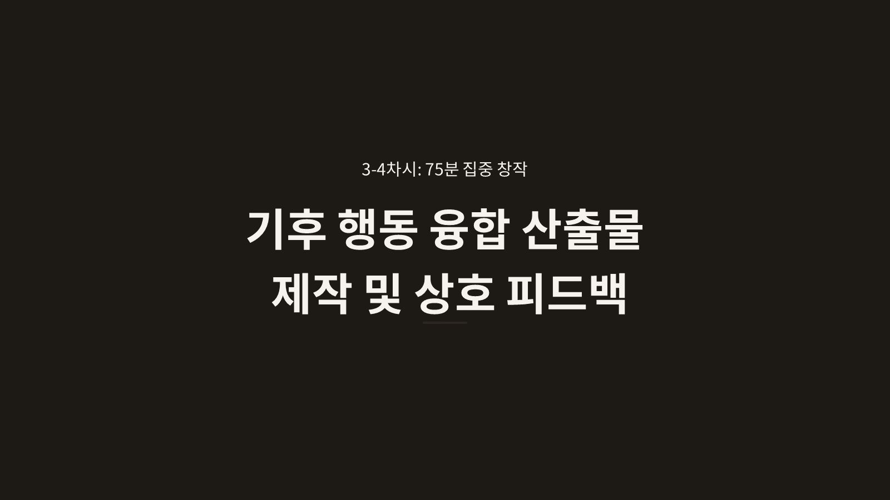
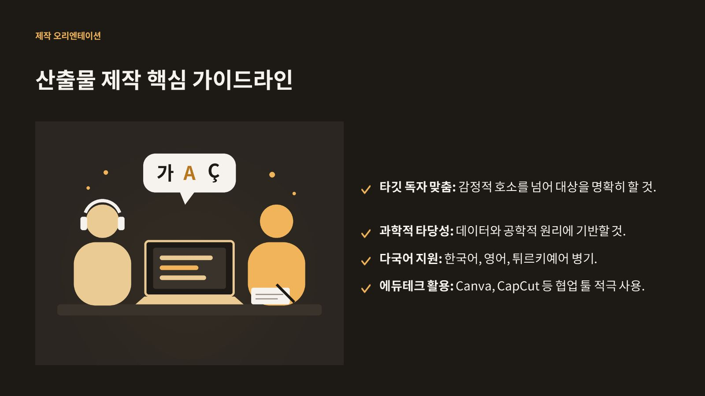
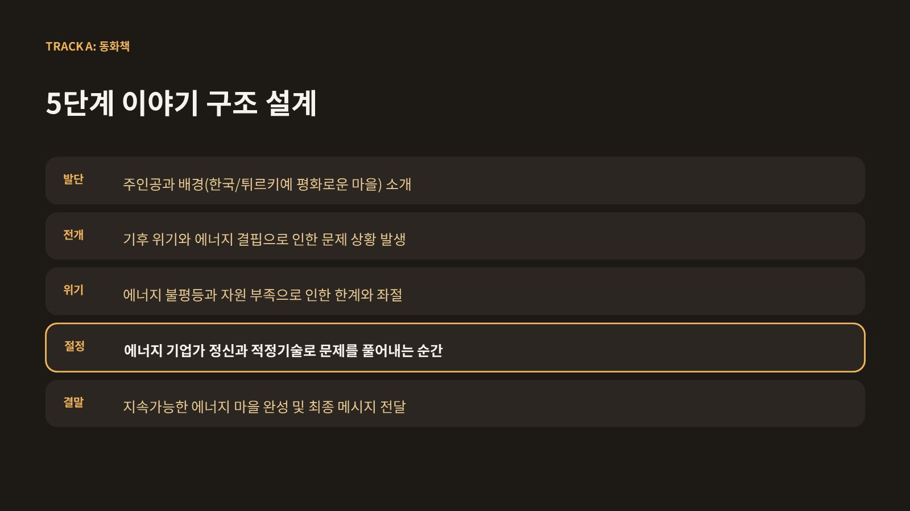
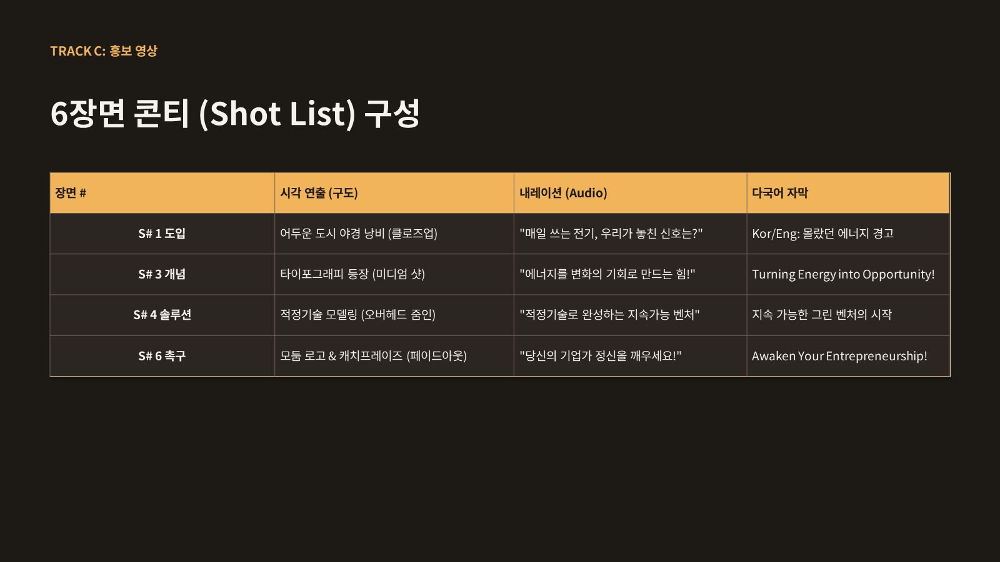
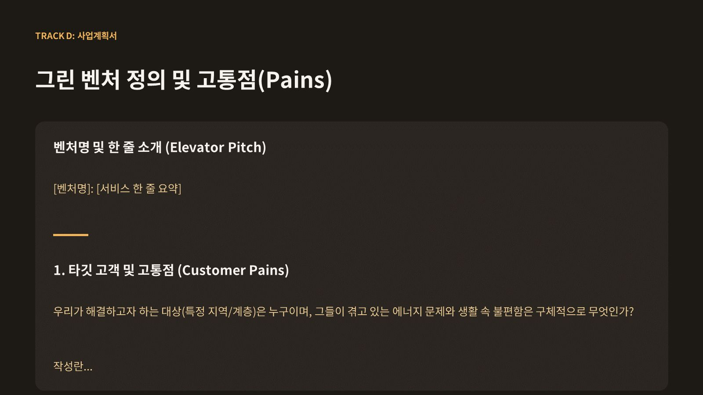
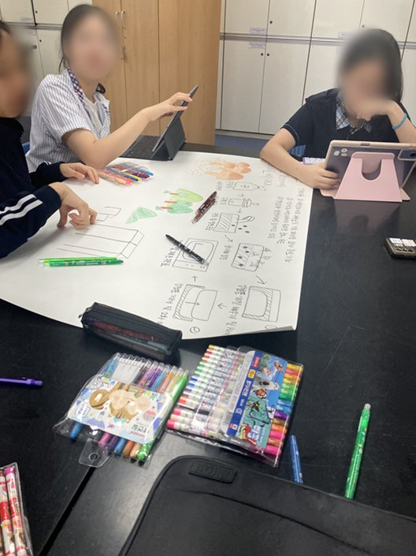

03 글로벌 · 3차시 / 6
우리 작품은
우리 작품은
누구에게 닿아야 할까?
오늘의 목표타깃 독자를 정하고, 데이터와 과학 원리에 기반해 우리 트랙의 초안을 만들어요.

수업 흐름
도입 · 학습 문제4분
활동 안내6분
트랙 안내 + 집중 창작 ①40분
← → 키나 아래 버튼으로 넘겨요. 교사 모드를 켜면 발문·유의점이 보여요.
우리 작품은
누구에게 닿아야 할까요?
프로젝트 기획 의도와 타깃 독자 분석이 왜 필요한지 생각해 봐요. 대상이 분명해야 메시지가 힘을 가져요.
자료: 작성 가이드라인 및 예시. 트랙 A~D의 주요 구성 요소 확인 → 모둠별 세부 제작 절차·유의점 안내.

산출물 제작 핵심 가이드라인
타깃 독자 맞춤
감정적 호소를 넘어 대상을 명확히.
과학적 타당성
데이터(지표·연도·출처)와 공학적 원리에 기반.
다국어 지원
한국어, 영어, 튀르키예어 병기.
에듀테크 활용
Canva, CapCut 등 협업 툴 적극 사용.

Track A · 에너지 SDGs 동화책
[A-1] 주인공(한국 & 튀르키예 페르소나, 상징 동물)과 5단계 이야기 구성 → [A-2] 15장면 스토리보드(그림 스케치 + 한/영 대사)
발단
전개
위기
절정
결말
PPT 예시 S#11 — “드디어 우리 마을이 밝아졌어.” / “Finally, our village is bright.”
유의점: 교훈 전달에 치우치지 않고 과학적 타당성 확보.

Track C · 에너지 기업가 정신 홍보 영상
[C-1] 타깃 시청자 설정 → 핵심 메시지 도출 → 내레이션 대본 → [C-2] 6장면 콘티(앵글, 자막, BGM) → CapCut/Canva로 편집하고 한/영/튀 자막 입히기
영상 유형: 숏폼(60~90초) 또는 캠페인 영상(2~3분)
CapCutCanva VideoVeed.io유의점: 초상권 주의, 저작권 무료 음원 및 템플릿 활용. 자료: 영상 콘티 워크시트.

Track D · 그린 벤처 사업계획서
[D-1] 비즈니스 모델 캔버스 작성: 고객의 고통점(Pains) · 창업 솔루션 · 핵심 자원 · 경제적/사회적 가치 제안 · 탄소 감축 기여도
고통점누가 무엇이 불편?
솔루션제품·서비스
원리적정기술·IoT
가치 제안예상 비용 절감·탄소 감축
지속가능성조달·유지보수·수익
예상 탄소 감축량 = 줄어드는 전기 사용량(kWh) × 배출계수(kgCO₂/kWh) — 배출계수의 출처와 연도를 함께 적어요.
자료: 그린 벤처 사업계획서 워크시트. ‘과학·공학 원리’ 칸은 [12기가05-04]와 연결. 감축량은 ‘예상(추정)’임을 밝히고, 실제로 확인하려면 무엇을 측정해야 하는지(예: 설치 전후 전력량계 값)를 함께 쓰게 하기.

40분 집중 창작
트랙별 작업아래 트랙 작업 칸에서 우리 트랙 탭을 골라 바로 써도 돼요(이 기기의 브라우저에만 저장돼요).
다국어 및 강점 기반 역할 분담형 상호 교수(Peer Teaching). 관찰 평가 및 산출물(스토리보드, 포스터, 콘티 등) 평가. 먼저 끝난 모둠: 다른 트랙 초안에 Padlet 질문 2개 남기기.

3차시 끝 · 중간 저장!
지금까지 만든 초안을 Padlet에 올려 두세요. 쉬는 시간 동안 튀르키예 친구들이 먼저 보고 피드백을 남길 수 있어요.
Padlet4차시 수업 화면으로 →
블록 수업이 아니면 여기서 끊음. 작업 칸 내용은 「내 기록 모두 복사」로 모둠 문서에 붙여 두기.
활동지
4색 트랙 작업 칸
쓴 내용은 이 기기의 브라우저에만 저장돼요. 수업이 끝나면 아래 「내 기록 모두 복사」로 모둠 문서에 붙여 두세요.
Track A · 에너지 SDGs 동화책 만들기
어린이·청소년 독자를 위한 에너지 지속가능성 동화를 5단계 이야기 구조와 15장면 스토리보드로 설계해요.
1. 동화책 기본 정보
2. 5단계 이야기 구조
1 · 발단 Exposition주인공과 배경(한국/튀르키예 마을) 소개
2 · 전개 Development에너지 결핍 및 기후 변화로 인한 문제 상황 발생
3 · 위기 Crisis에너지 불평등이나 기술 부족으로 어려움 직면
4 · 절정 Climax에너지 기업가 정신과 적정기술 아이디어로 해결하는 결정적 순간
5 · 결말 Resolution지속가능한 에너지 마을 완성 및 최종 메시지
3. 15장면 스토리보드 (내용 및 대사 Kor/Eng)
S# 1마을의 평화로운 모습과 주인공 등장
Peaceful view of the village and introduction of the main character
Peaceful view of the village and introduction of the main character
S# 2에너지 문제가 찾아오는 장면
The scene where the energy problem occurs
The scene where the energy problem occurs
S# 3주인공이 불편함을 겪는 모습
The main character experiencing inconvenience
The main character experiencing inconvenience
S# 4한국과 튀르키예 친구들의 만남
The meeting of Korean and Turkish friends
The meeting of Korean and Turkish friends
S# 5아이디어 회의 장면
Idea meeting scene
Idea meeting scene
S# 6첫 번째 시도의 실패
Failure of the first attempt
Failure of the first attempt
S# 7적정기술 원리 발견
Discovery of appropriate technology principles
Discovery of appropriate technology principles
PPT 예시: 버려진 페트병과 소형 패널로 원리를 발견 — “이걸로 빛을 만들 수 있어!” / “We can make light with this!”
S# 8새로운 솔루션 제작
Creation of a new solution
Creation of a new solution
S# 9마을 사람들과의 협력
Collaboration with the villagers
Collaboration with the villagers
S# 10위기 극복 과정
The process of overcoming the crisis
The process of overcoming the crisis
S# 11솔루션 작동 성공 및 빛이 들어오는 장면
Successful operation of the solution and the lights come on
Successful operation of the solution and the lights come on
PPT 예시: “드디어 우리 마을이 밝아졌어.” / “Finally, our village is bright.”
S# 12에너지 믹스의 완성
Completion of the energy mix
Completion of the energy mix
S# 13모두가 기뻐하는 축제
A festival where everyone rejoices
A festival where everyone rejoices
S# 14주인공들의 깨달음
The main characters' realization
The main characters' realization
S# 15독자에게 전하는 메시지 및 마침
Message to the readers and the end
Message to the readers and the end
PPT 예시: “다음 기후 영웅은 바로 당신입니다.” / “You are the next climate hero.”
유의점: 교훈 전달에 치우치지 말고 과학적 타당성을 확보해요.
Track B · 신문 칼럼 & 비주얼 포스터
양국 언론의 에너지 기사 프레이밍을 비판적으로 비교해 칼럼을 쓰고, Canva로 기후 행동 포스터를 만들어요.
1. 비판적 논평 칼럼 집필 기획서
에너지 오피니언Korea · Türkiye Energy Column
2. Canva 기후 포스터 디자인 기획
Canva에서 만들기
유의점: 무료 오픈 소스 이미지를 써요. 일상에서 실천할 수 있는 직관적인 행동 지침으로!
Track C · 에너지 기업가 정신 홍보 영상
에너지 기업가 정신과 기후 행동의 필요성을 대중과 청소년에게 전할 영상을 기획하고 콘티를 써요.
1. 홍보 영상 기본 기획
2. 6장면 콘티 (Shot List) — 예시를 참고해 우리 모둠 버전을 써요
S# 1 · 도입 / 문제 제기
- 화면 · 구도
- 어두운 도시 야경 & 낭비되는 에너지(빠른 컷 전환) · 클로즈업
- 내레이션
- “매일 쓰는 전기, 우리가 지나친 기후의 경고 신호는 없을까요?”
- 자막
- 우리가 몰랐던 에너지의 경고 / The Unnoticed Warning of Energy
S# 2 · 현황 비교
- 화면 · 구도
- 한국과 튀르키예의 에너지 믹스 비교 인포그래픽 · 분할 화면
- 내레이션
- “한국과 튀르키예, 서로 다른 바람과 태양 아래 우리는 같은 고민을 합니다.”
- 자막
- 양국의 에너지 믹스를 비교하다 / Comparing Energy Mix of Two Nations
S# 3 · 개념 제시
- 화면 · 구도
- ‘에너지 기업가 정신’ 타이포그래피 등장 · 미디엄 샷
- 내레이션
- “단순한 절약을 넘어, 에너지를 변화의 기회로 만드는 힘! 바로 ‘에너지 기업가 정신’입니다.”
- 자막
- 에너지를 변화의 기회로! / Turning Energy into Opportunity!
S# 4 · 솔루션 제안
- 화면 · 구도
- 모둠별 그린 벤처 적정기술 아이디어 시연/모델링 · 오버헤드 샷 & 줌인
- 내레이션
- “태양광 모듈과 적정기술로 완성하는 지속 가능한 그린 벤처!”
- 자막
- 지속 가능한 그린 벤처의 시작 / Starting Sustainable Green Ventures
S# 5 · 협력 모습
- 화면 · 구도
- 한국과 튀르키예 학생들이 온라인으로 웃으며 발표하는 캡처 · 풀 샷
- 내레이션
- “국경을 넘어 함께 만드는 깨끗한 내일, 우리는 글로벌 그린 아키텍트입니다.”
- 자막
- 국경을 넘어 만드는 깨끗한 내일 / Clean Tomorrow Beyond Borders
S# 6 · 행동 촉구
- 화면 · 구도
- 모둠 로고 & 캐치프레이즈, 쿠키 영상 · 페이드 아웃
- 내레이션
- “지금 당신의 에너지 기업가 정신을 깨우세요! Together for SDGs!”
- 자막
- 지금, 에너지 기업가 정신을 깨우세요! / Awaken Your Energy Entrepreneurship!
한국어·영어·튀르키예어 자막을 함께 넣어요. 저작권 무료 이미지·음원(BGM)을 쓰고, 초상권 동의는 필수예요.
Track D · 그린 벤처 창업 사업계획서
비즈니스 모델 캔버스로 고객의 고통점, 솔루션, 경제적·사회적 가치 제안을 구체화해요.
캔버스 9요소 + 사업계획서에 더할 두 칸
01
고객 페르소나
고객 집단을 대표하는 한 사람의 구체적인 사용자02
문제 (Pains)
고객이 원하는(필요한) 바를 이루기 어려운 상황03
해결방안 (Solution)
고객의 문제를 해결하는 제품/서비스의 기능과 특징04
고유 장점
Unfair Advantages · 고객이 경험하게 될 특별하고 차별적인 강점05
채널
고객에게 연결될 수 있는 커뮤니케이션 방법들06
수익흐름
연결된 고객으로부터 창출할 수 있는 수익 방법과 목표07
비용구조
프로젝트 진행 시 필요한 예산 사용 내역08
경제적 가치 (KPI)
성과 중 수치로 측정할 수 있는 핵심 지표 — 예: 사용자 비용 절감액09
사회적 가치 (SVI)
성과 중 공공의 이익에 기여하는 지표 — 예: 예상 온실가스 감축량(계산식·배출계수 출처 함께)+
과학적·공학적 원리
적정기술, 신재생 에너지 변환 기술, AI/IoT 센서 등 작동 원리+
지속가능성 및 운영 계획
현지 재료 조달, 기기 유지보수 체계, 수익 창출 및 사업 지속 방안데모데이에서는 예상 탄소 감축량과 비용 절감액을 계산식(예: 줄어드는 전기 사용량 kWh × 배출계수 kgCO₂/kWh, 계수 출처·연도 표기)과 함께 보여 주고, 실제로 확인하려면 무엇을 측정해야 하는지도 적어요.
이 차시 슬라이드
3차시 도입 · 트랙 A · 16~20장
트랙 B · C · D · 22~29장
21장은 빈 슬라이드라 빼고 두 묶음으로 나눴어요.
이 차시 평가
트랙별 산출물 평가 기준
트랙별 대응 성취기준 — A 동화책·C 영상: [12기지04-01] [10통과2-02-06] · B 칼럼: [10공국2-03-02] · D 사업계획서: [10공국2-03-02] [12기가05-04] · 관찰 평가 및 산출물(스토리보드, 포스터, 콘티, 사업계획서) 평가
| 기준 | A | B | C |
|---|---|---|---|
| [A] 동화책 기획·스토리보드 12기지04-01 · 10통과2-02-06 | 에너지 불평등 문제와 해결 원리가 과학적으로 맞게 이야기 전개(위기→절정)에 드러나고, 대상 독자 수준에 맞는 다국어 대사로 전한다. (조건: 5단계·15장면) | 이야기는 완성했지만 해결 원리가 과학적으로 틀리거나 설명 없이 ‘마법처럼’ 해결된다. 또는 대사가 한 언어뿐이다. | 5단계 가운데 위기·절정이 비어 있거나, 에너지 문제가 이야기에 드러나지 않는다. |
| [B] 칼럼 집필·포스터 제작 10공국2-03-02 | 양국 기사를 2편 이상 비교해 프레이밍 차이를 짚고, 주장–근거(데이터)–반론 고려가 이어진 칼럼을 쓴다. 포스터에는 슬로건과 실천 수칙 3개가 들어간다. | 기사 1편만 분석했거나, 칼럼의 주장과 근거 데이터가 연결되지 않는다. | 기사 분석 없이 의견만 쓰거나, 포스터에 실천 수칙이 없다. |
| [C] 영상 기획·콘티 제작 12기지04-01 · 10통과2-02-06 | 타깃 시청자와 핵심 메시지를 한 문장으로 정하고, 6장면 모두에 화면·내레이션·자막을 채우며, 데이터 장면(S#2)에 출처를 적는다. | 6장면 중 1~2장면이 비어 있거나, 데이터 장면에 출처가 없다. | 타깃 시청자나 핵심 메시지가 정해지지 않았고, 3장면 이상이 비어 있다. |
| [D] 사업계획서·피드백 반영 10공국2-03-02 · 12기가05-04 | 캔버스 9요소와 ‘과학·공학 원리’ 칸을 채우고, 가치 제안(KPI·SVI)에 예상 수치와 계산식·출처를 적으며, 받은 Padlet 피드백 2개 이상을 반영한 흔적을 남긴다. | 가치 제안(KPI·SVI)을 수치 없이 적었거나, 받은 피드백을 1개 이하만 반영했다. | 고통점과 솔루션이 서로 연결되지 않거나, 9요소 중 4개 이상이 비어 있다. |
산출물은 4차시 중간 공유 뒤 평가해요. 미리 보고 A 수준을 목표로 만들어요.
나가기 질문
오늘 만든 초안에서 ‘과학적 타당성’을 뒷받침하는 데이터(지표·연도·출처)나 원리는 무엇인가요?